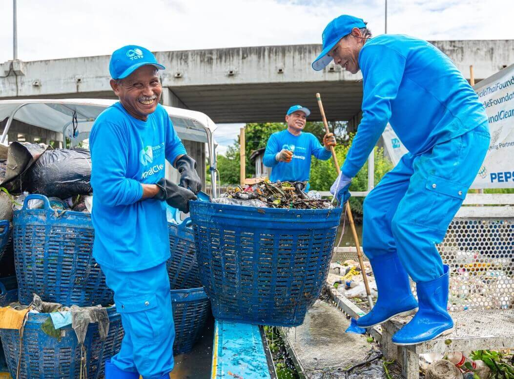

Menos desperdício.
Mais
consciência.
Comece sua jornada

A Fundação TerraCycle combate o plástico nos oceanos direto na fonte. Trabalhando em conjunto com comunidades locais em regiões com corpos d'água altamente poluídos, nós criamos soluções de prevenção, coleta e reciclagem de resíduos dos rios.
